Introdução à simulação de Fumo
Introdução
A simulação de fumos é construída com 2 elementos fundamentais mínimos: o emissor de fumo e o domínio. O domínio é a malha que vai delimitar a área onde existe o fumo.
1- Aumente o cubo inicial de modo a ocupar uma larga área do enquadramento da câmara. Este cubo irá servir de domínio.
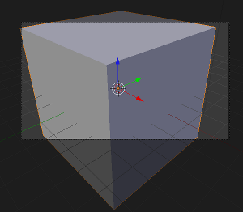2- Adicione uma Suzanne no centro do cubo, mais perto da base.
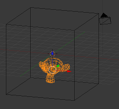3- Selecione o cubo, vá ao painel Physics, adicione uma simulação Smoke e atribua ao cubo o papel de Domain.
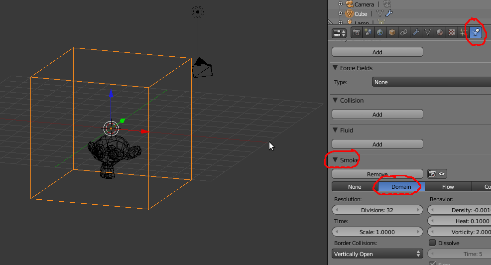4- Selecione a Suzanne, vá ao painel Physics, adicione uma simulação Smoke e atribua-lhe o papel de Flow. Automaticamente é criado um Particle System com o nome SmokeParticles.
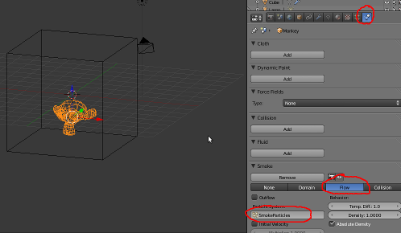5- Se fizer Alt+A já conseguirá ver uma torre de fumo a subir da Suzanne até ao topo do cubo. No entanto, ainda não conseguirá renderizar... o cubo está a cobrir o fumo.
6- Selecione o Domain (o cubo), vá ao painel Material e configure para o objeto cubo ser renderizado como Volume. Altere a densidade base do Volume para 0.
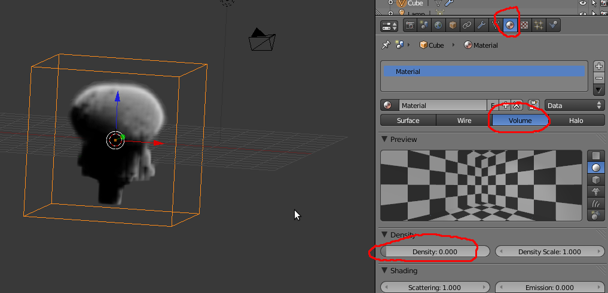7- Ainda com o Domain selecionado, vá ao painel Texture e mude o tipo de textura para Voxel Data. Mais abaixo, ainda no mesmo painel, escolha o cubo como Domain Object e ative a Density na Influence.
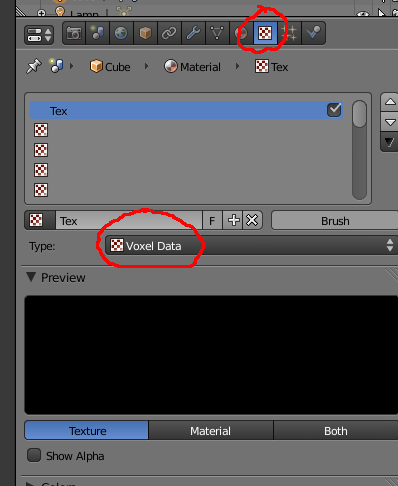
8- Opcional: Selecione a Suzanne, o seu emissor de fumo, vá ao painel Particles e desative a opção Emitter. Ou seja, não irá ser renderizado o emissor, a Suzanne.
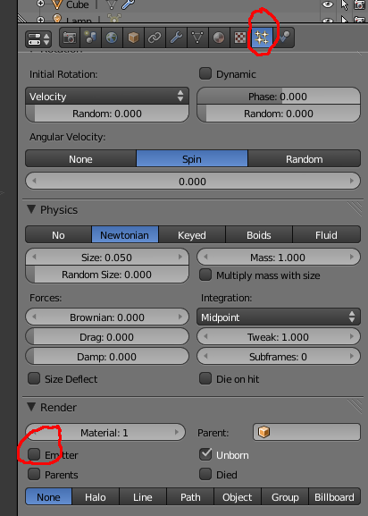9- Faça um render de teste para ver a evolução. Nesta altura, para ver melhor o fumo, talvez seja útil ir ao painel World e escolher uma cor mais escura para o fundo.
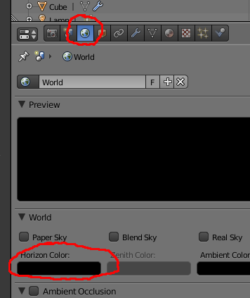10- Selecione o Domain, vá ao painel Material e altere o valor Emission para 1. Se aumentar o valor de Emission, o seu fumo vai ficar ainda mais claro. Os tons de “rosa” são resultado da cor definida em Influence no painel Texture. Pode alterar a cor e/ou alterar para outro Blend Mode (nem todos são úteis...).
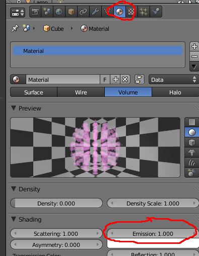 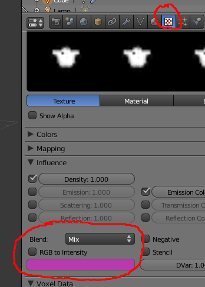11- Volte ao painel Material e configure o Emission para 0.000, Scattering para 10.000 e Asymmetry para 0.500. Desta feita, talvez seja útil, voltar ao painel World e mudar o fundo para uma cor mais clara... Através da combinação de valores e cores do painel Shading consegue alterar radicalmente o aspeto do fumo.
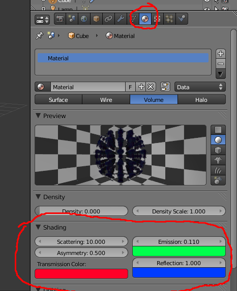12- Para melhorar a qualidade/aspeto do seu fumo, selecione o Domain, vá ao painel Physics e ative a opção Smoke High Resolution. Volte à frame 1 e faça novo Alt+A. A qualidade do fumo irá aumentar substancialmente. Aumentar o valor de divisões no painel Smoke e Smoke High Resolution também melhora o aspeto do fumo, tornando-o mais definido (sharp).
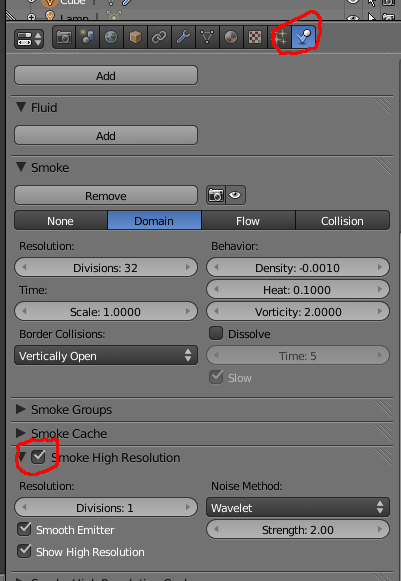 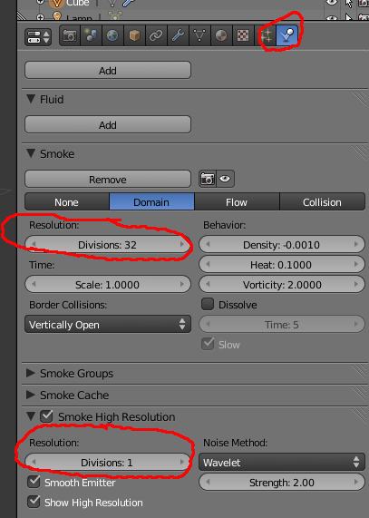13- No Domain, painel Material, o valor Density Scale permite criar um fumo mais denso (valor + alto) ou mais rarefeito (valor + baixo).
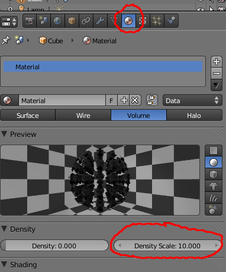Alguns parâmetros
Density: Valor em que a densidade afeta o movimento do fumo. Valores mais elevados fazem com que o fumo suba mais depressa.
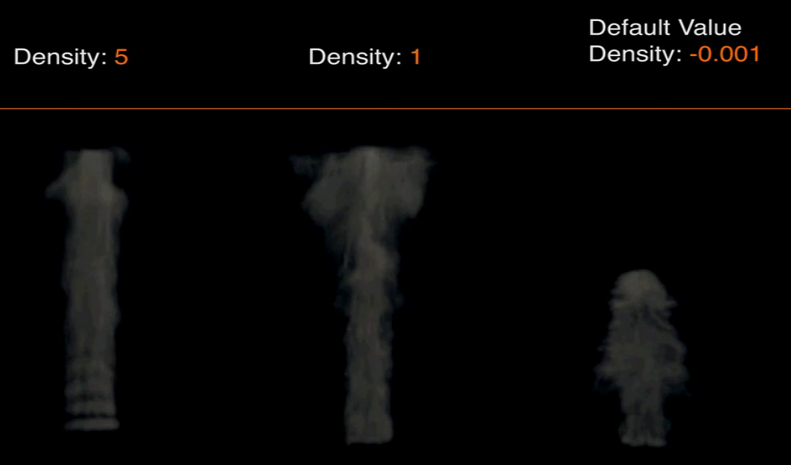Resolution: define o grau de detalhe da simulação. Na imagem abaixo foi ativada a opção Smoke High Resolution.
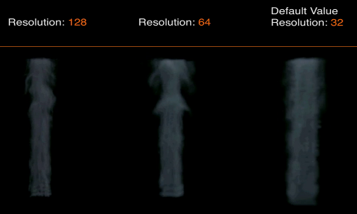Tme > Scale: Define a velocidade da simulação de fumo. Valores mais baixos tornam o fumo mais lento, valores mais altos fazem o fumo mais rápido.
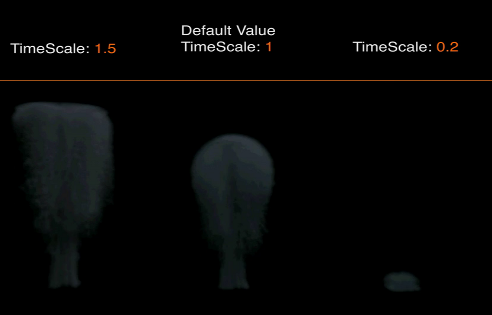Vorticity: define a turbulência dentro do fumo. Valores mais baixos fazem com que o fumo suba mais direito, valores mais altos introduzem maior turbulência.
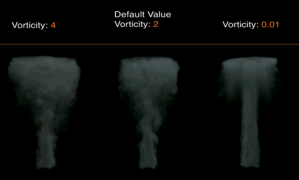Temperature Difference: quantidade de calor média que afeta o movimento do fumo, valores mais elevados fazem com que o fumo suba mais depressa. Este parâmetro também existe nos settings do Emitter (emissor de fumo), permitindo ter emissores diferentes dentro de um mesmo Domain com temperaturas diferentes (com o fumo a subir a velocidades diferentes).
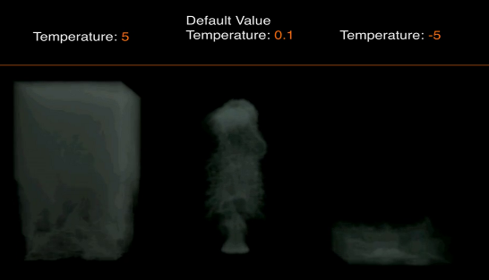Border Collisions:
Vertically Open : Fumo desaparece quando colide com topo ou chão do Domain.
Open : Fumo desaparece quando atravessa limites do Domain.
Collide All : Limites do Domain funcionam como Collision, fumo colide e fica no interior do Domain.
Dissolve & Time : permite que o fumo se dissipe com o tempo & velocidade da dissipação do fumo.
Mais duas notas:
1- Para renderizar uma animação, deverá gravar o seu ficheiro e fazer Bake. Atribua um nome ao Bake digitando o mesmo na caixa File Name antes de fazer Bake.
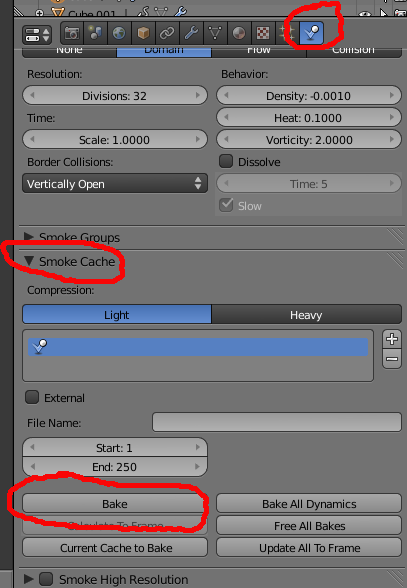2. Para criar fumos de cor diferente...
a) Crie um Domain e 2 objetos Flow seguindo o tutorial acima. Os 2 objetos Flow devem ter um “temperatura” diferente (por exemplo: -2.0 para um objeto e 2.0 para o outro).
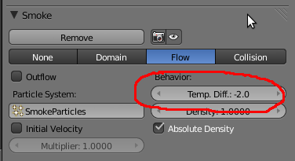b) Selecione o Domain e atribua uma segunda textura seguindo a configuração abaixo.
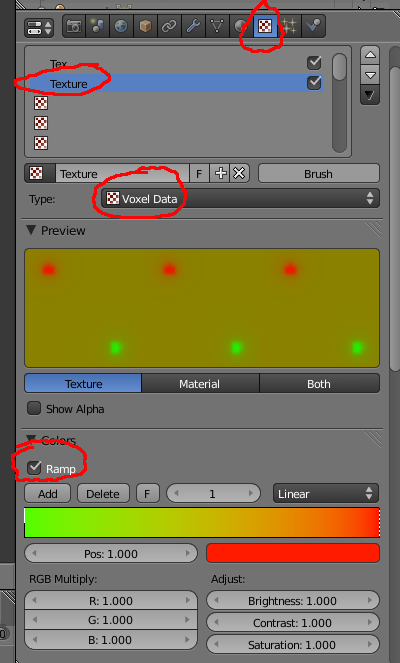 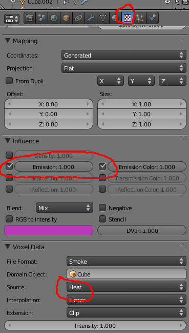Anime os objetos Flow e depois faça Alt+A :)
Quick Effect Operators
Para facilitar a configuração básica de diversos efeitos (i.e. Smoke/Fumo, Fluid/Fluído, Explode/Explosão e Fur/Pêlo), foram criados Quick Effects Operators.
a) Selecione o objeto que irá servir de emissor e clique na Barra de Espaços.
b) Escreva Quick Smoke e clique no Enter.